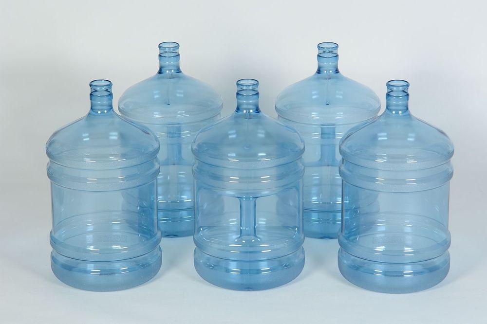
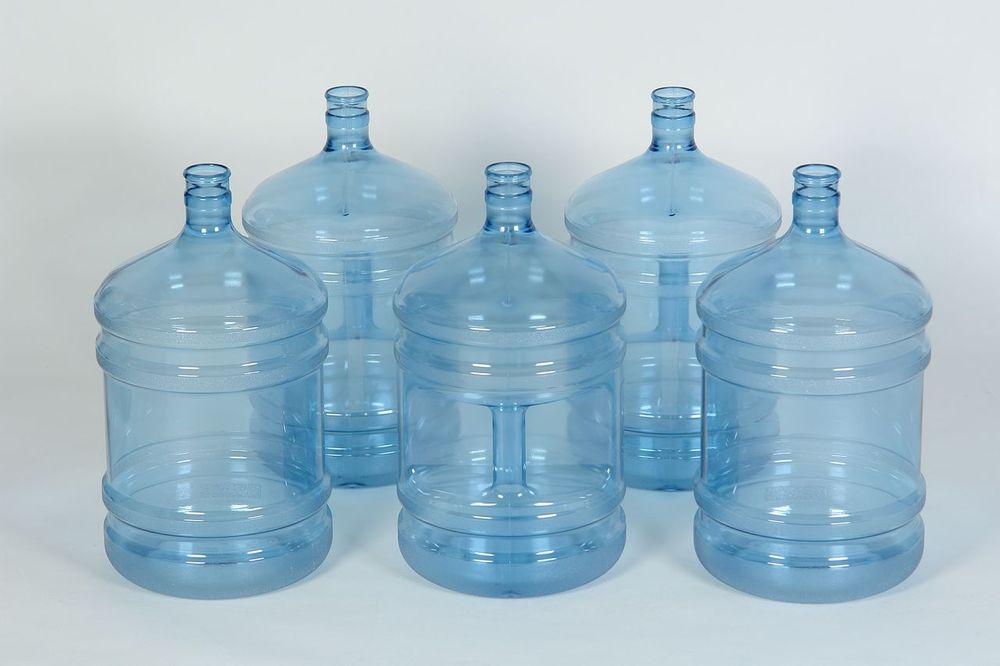

Наша Продукция


Наша вода делает лучше ваш день и ваше будущее
Наш магазин предлагает высококачественную питьевую воду. Мы гордимся своей чистотой и свежестью продукции.Компания оказывает услуги по доставке чистой питьевой воды на дом, в офис и на дачу. Наша работа - доставка чистой питьевой воды на дом и в офис по городам Южного Подмосковья - Серпухов, Чехов, Протвино, Пущино, Оболенск, Климовск, Подольск, Щербинка, Михнево,Заокский В числе наших клиентов крупные офисные центры, предприятия общественного питания, производственные объекты, а также тысячи благодарных клиентов по городам: Серпухов, Пущино, Протвино, Оболенск, Чехов, Подольск и их районы. Наличие склада в Заокском позволяет осуществлять своевременную доставку воды и оборудования по Заокску и Серпуховскому району
